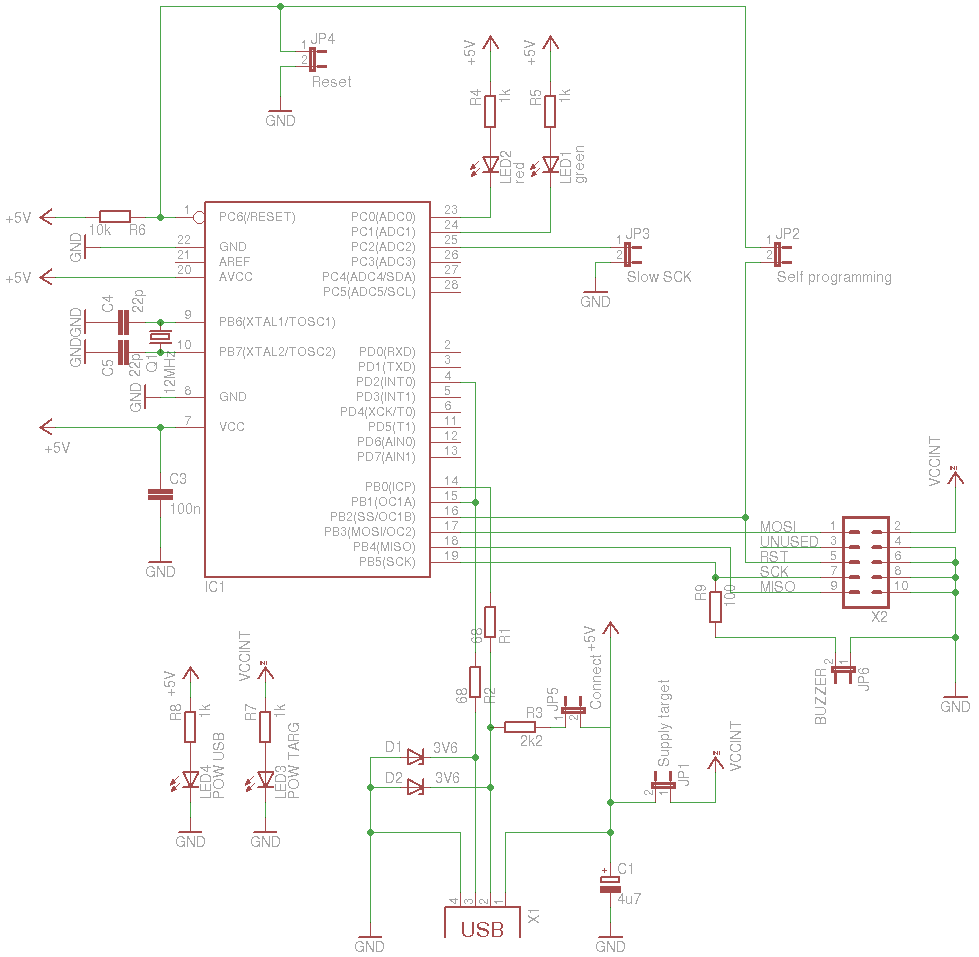
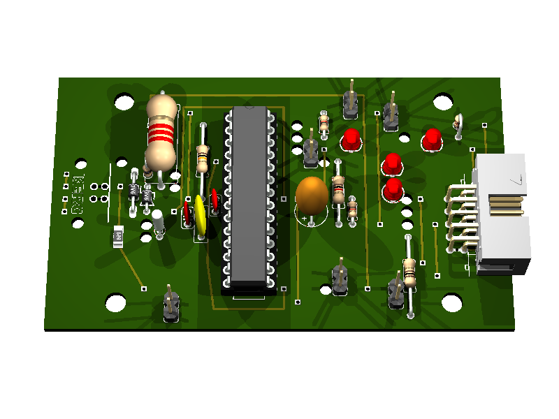
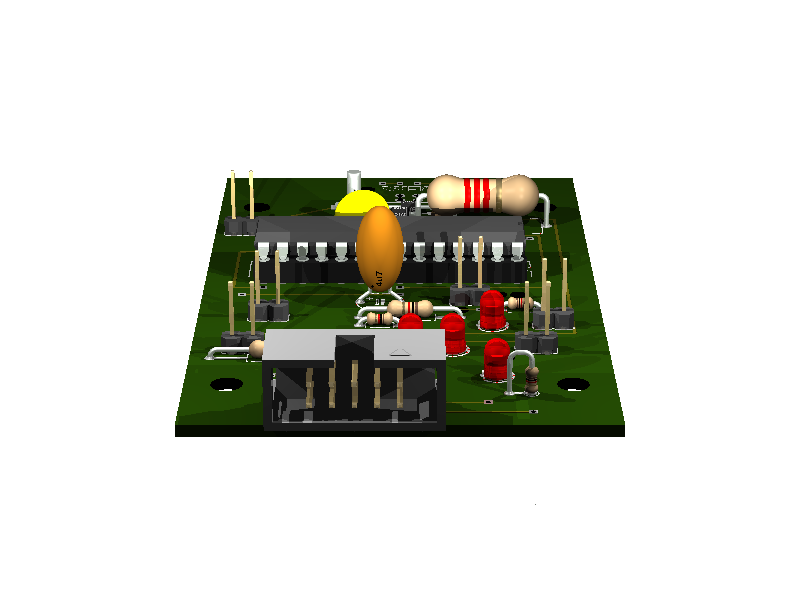
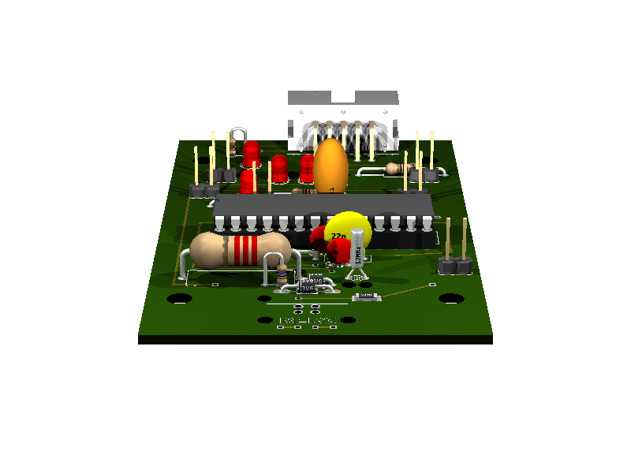
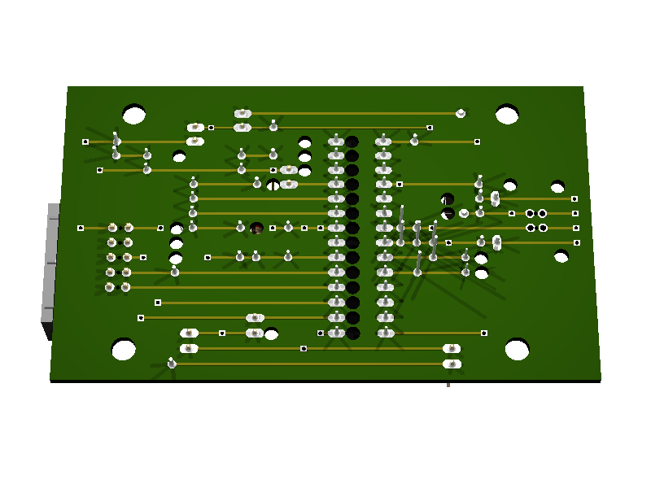

34. USBasp AVR programmer¶
Status: OK
It is used for programming AVR controller and Arduino compatible boards using the USB port.
firmware, design: http://www.fischl.de/usbasp/
USBasp is based on V-USB (http://www.obdev.at/products/vusb/index.html)
34.1. V-USB hardware recommendation¶
only difference to USBasp: 1.5 kΩ pull-up resistor
http://vusb.wikidot.com/hardware

“Solution B: Level conversion on D+ and D- Level conversion with Zener diodes.
Instead of reducing the AVR’s power supply, we can limit the output voltage on D+ and D- with Zener diodes. We recommend 3.6 V low power types, those that look like 1N4148 (usually 500 mW or less). Low power types are required because they have less capacitance and thus cause less distortion on the data lines. And 3.6 V is better than 3.3 V because 3.3 V diodes yield only ca. 2.7 V in conjunction with an 1.5 kΩ (or more exactly 10 kΩ) pull-up resistor. With 3.3 V diodes, the device may not be detected reliably.
If you use Zener diodes for level conversion, please measure the voltage levels to make sure that the diodes you have chosen match the requirements.
Advantages of the Zener diode approach:
- Low cost.
- Easy to obtain.
- Entire design can be at 5 V.
- AVR can be clocked at high rates.
Disadvantages:
- Not a clean solution, a compromise between all parameters must be found.
- Zener diodes come with a broad range of characteristics, especially at low currents, results may not be reproducible.
- High currents when sending high-level.
- High level is different for signaling and in idle state because signaling uses high currents to drive the diodes while idle state is driven by a 1.5 kΩ pull-up resistor.”
34.3. Test on Ubuntu¶
checking:
$ lsusb |grep -i 16c0:05dc
Bus 003 Device 006: ID 16c0:05dc VOTI shared ID for use with libusb
$ ls -l /dev/bus/usb/003/006
crw-rw-r-- 1 root root 189, 261 2011-11-05 10:31 /dev/bus/usb/003/006
$ avrdude -patmega88 -cusbasp
avrdude: Warning: cannot query manufacturer for device: error sending control message: Operation not permitted
avrdude: error: could not find USB device "USBasp" with vid=0x16c0 pid=0x5dc
The permission should be changed:
$sudo nano /etc/udev/rules.d/60-objdev.rules
add this line:
ATTRS{idVendor}=="16c0", ATTRS{idProduct}=="05dc", GROUP="users", MODE="0666"
update rules:
$sudo udevadm trigger
checking again:
$ ls -l /dev/bus/usb/003/006
crw-rw-rw- 1 root users 189, 261 2011-11-05 10:33 /dev/bus/usb/003/006
$ avrdude -patmega88 -cusbasp
avrdude: error: programm enable: target doesn't answer. 1
avrdude: initialization failed, rc=-1
Double check connections and try again, or use -F to override
this check.
avrdude done. Thank you.
Permission is OK now.
Testing with connected controller:
$ avrdude -patmega88 -cusbasp
avrdude: AVR device initialized and ready to accept instructions
Reading | ################################################## | 100% 0.01s
avrdude: Device signature = 0x1e930a
avrdude: safemode: Fuses OK
avrdude done. Thank you.
34.4. Schematic¶

34.6. Partlist¶
part value position C1 4u7 (2.4 0.8) C3 100n (1.7 0.85) C4 22p (1.5 0.75) C5 22p (1.6 0.7) D1 3V6 (1.1 0.95) D2 3V6 (1.2 0.9) IC1 (1.95 0.85) JP1 Supply target (3 1.55) JP2 Self programming (2.6 0.25) JP3 Slow SCK (2.4 1.25) JP4 Reset (3 0.15) JP5 Connect (2.7 1.65) JP6 BUZZER (1.4 0.05) LED1 green (3 1.15) LED2 red (3 0.95) LED3 POW TARG (3.3 1.35) LED4 POW USB (2.7 1.35) Q1 12MHz (1.3 0.65) R1 68 (1 0.6) R2 68 (1.2 1.15) R3 2k2 (1.3 1.35) R4 1k (2.7 0.8) R5 1k (2.6 0.95) R6 10k (1.6 1.2) R7 1k (3.5 1.45) R8 1k (2.5 1.5) R9 100 (3.1 0.3) X1 (0.7 0.95) X2 (3.45 0.7)
34.7. 3D view¶
34.7.1. Front¶

34.7.2. Right side¶

34.7.3. Left side¶

34.7.4. Bottom¶

34.8. Reset¶
To reset on Ubuntu:
#!/usr/bin/env python
import logging
import usb.core
logging.basicConfig(level=logging.DEBUG)
import fcntl
ID_VENDOR = 0x16c0
ID_PRODUCT = 0x05dc
USBDEVFS_RESET = 21780
def find():
print("searching for device (%x:%x)" % (ID_VENDOR, ID_PRODUCT))
dev = usb.core.find(idVendor=ID_VENDOR,
idProduct=ID_PRODUCT,
)
if not dev:
print("device not found")
return dev
def usbstr(i):
s = str(i)
s = '000'[0:3 - len(s)] + s
return s
def usbfs_filename(dev):
return '/dev/bus/usb/%s/%s' % (usbstr(dev.bus), usbstr(dev.address))
def reset1(dev):
fname = usbfs_filename(dev)
print("Resetting USB device %s" % fname)
with open(fname, 'w') as fd:
rc = fcntl.ioctl(fd, USBDEVFS_RESET, 0)
if (rc < 0):
print("Error in ioctl")
print("OK")
def reset2(dev):
dev.reset() # not working
dev = find()
if dev:
reset1(dev)


{kind=link}